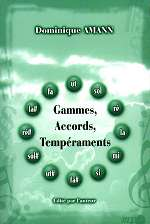

Gammes, accords,
tempéraments
Dominique Amann

Gammes, accords,
|
|
|  |
Gammes, accords, tempéraments Auteur : Dominique Amann Adresse de l'auteur pour commander l'ouvrage : |
|
Un problème fondamental... L'évolution des idées concernant la division de l'octave permet de mieux comprendre la structure de la gamme occidentale actuelle et de répondre à certaines questions que se posent tous les musiciens :
Paradoxalement, très peu de publications ont été consacrées à ce sujet au cours des dernières années, et son étude se trouve ainsi réservée aux spécialistes. |
...exposé en toute rigueur... L'ouvrage que j'ai le plaisir de vous proposer traite tout ce domaine de l'acoustique musicale. Les différentes théories élaborées au cours des siècles y sont présentées dans leur chronologie historique, en liaison avec l'évolution de l'écriture musicale et du goût des musiciens. Le lecteur découvre ainsi pas à pas les pratiques occidentales du Moyen Âge au XXe siècle, et notamment :
|
...et en toute clarté. Le désir de rendre l'exposé accessible à tous les lecteurs m'a conduit à clarifier les notions les plus délicates :
|
|||
|
|||||